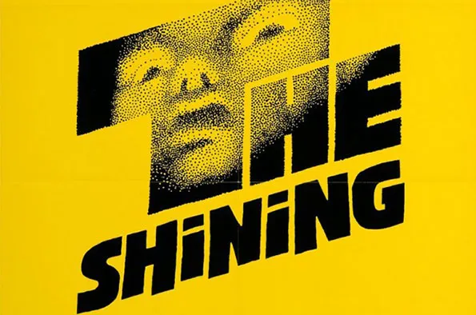

About Me
My name is Ikti. And I am currently in my 8th semester in Brac University.
I am making this as a project for my CSE391 course
Hobbies
When I'm not in University or studying, I like to:
- Read thriller novels
- Watch movies
- Play Games
My favourite movie quote is:
“Why do we fall, Bruce? So we can learn to pick ourselves up.”
My favorite movies and my review:
| Movie | Year | My rating | Cover |
|---|---|---|---|
| Memories of Murder | 2003 | 5/5 |  |
| It's a Wonderful Life | 1946 | 4.9/5 | |
| Dead Poets Society (1989) | 1989 | 4.9/5 |  |
Reviews
My favorite books and my review:
| Book | Author | My rating | Cover |
|---|---|---|---|
| Norwegian Wood | Haruki Murakami | 4/5 | |
| The Shining | Stephen King | 4.5/5 |  |
| A Little Life | Hanya Yanagihara | 4.5/5 |
My favorite games and my review:
| Game | My rating | Cover |
|---|---|---|
| Elden Ring | 5/5 |  |
| Sekiro | 5/5 |  |
| The Last of us | 4.9/5 |
Favorite Links
When I am not in my university or not checking for updates in my CSE 391 piazza, I am either checking out book reviews on Goodreads most of the time or checking out game reviews on IGN. My favorite steaming site is Netflix